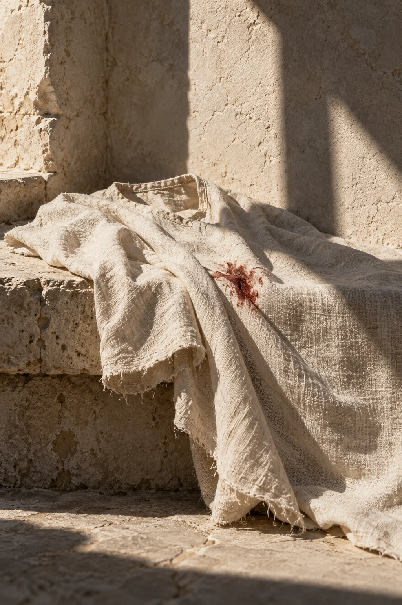
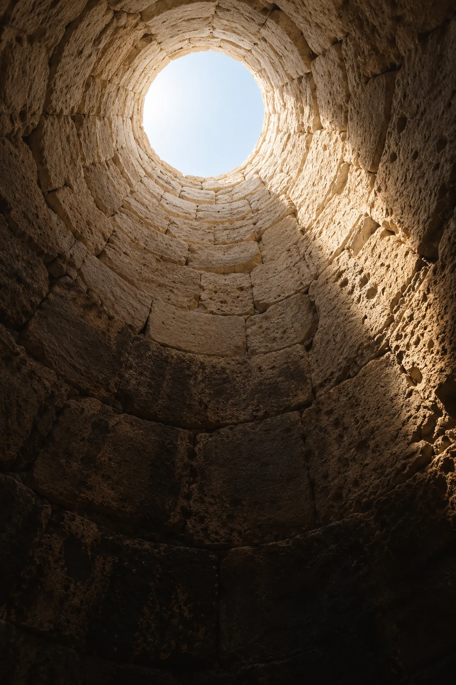
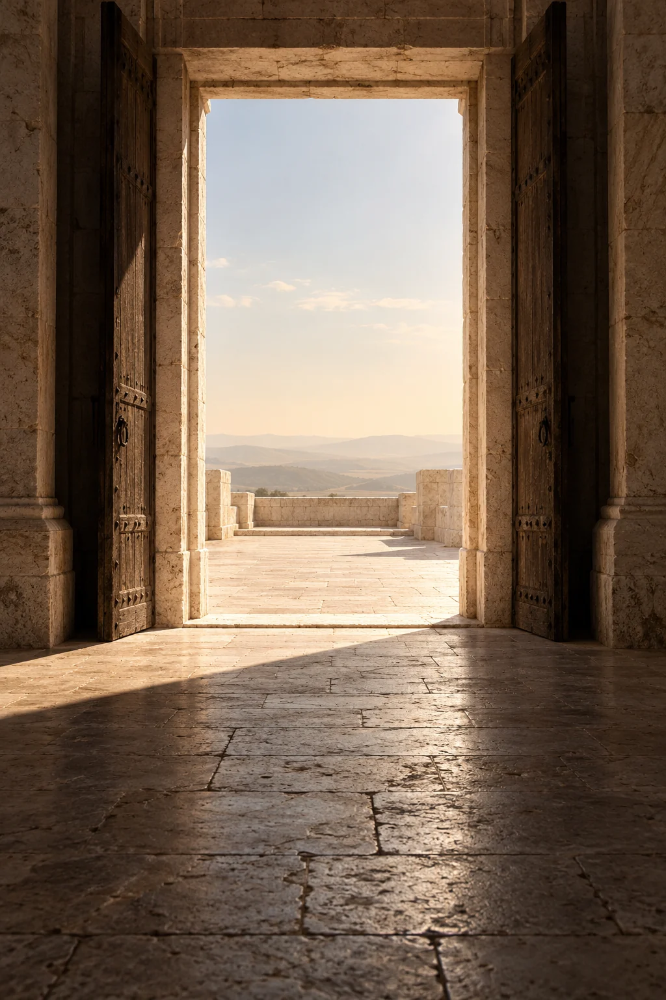

للرؤيا باب.
قَالَ يَا بُنَيَّ لَا تَقْصُصْ رُؤْيَاكَ عَلَىٰ إِخْوَتِكَ فَيَكِيدُوا لَكَ كَيْدًا ۖ إِنَّ الشَّيْطَانَ لِلْإِنسَانِ عَدُوٌّ مُّبِينٌ
بدأ يوسف حديثه بقلبٍ يعرف أين يضع بشارته: عند أبيه. رأى أحد عشر كوكبًا والشمس والقمر ساجدين له، فقصّ رؤياه على يعقوب. جاءه الجواب حنانًا وتحذيرًا في جملة واحدة: يا بنيّ، لا تقصص رؤياك.
لم يطلب منه أبوه أن ينسى ما رأى. دلّه على من ينبغي أن يسمع. من هنا نقرأ عبارتك: للنعمة وجهٌ نفرح به، وللبوح بها بابٌ نختار من يدخل منه.
أحد عشر كوكبًا، والشمس والقمر
تكوين رمزي لرؤيا يوسف
إِذْ قَالَ يُوسُفُ لِأَبِيهِ يَا أَبَتِ إِنِّي رَأَيْتُ أَحَدَ عَشَرَ كَوْكَبًا وَالشَّمْسَ وَالْقَمَرَ رَأَيْتُهُمْ لِي سَاجِدِينَ
يوسف: ٤حين صار الحبّ
حسابًا
إِذْ قَالُوا لَيُوسُفُ وَأَخُوهُ أَحَبُّ إِلَىٰ أَبِينَا مِنَّا وَنَحْنُ عُصْبَةٌ إِنَّ أَبَانَا لَفِي ضَلَالٍ مُّبِينٍ
هكذا يعرض القرآن كلام الإخوة. ما رآه يوسف رؤيا، رآه أبوه بشارة تستحق الحفظ. أمّا الإخوة فعبّروا عن قربه وقرب أخيه من أبيهم بلغة المقارنة: أحبّ إلى أبينا منّا. صار الحبّ في كلامهم مقدارًا يزيد عند واحد، فيُشعر الآخرين بأنه نُقص منهم.
نستطيع أن نتأمل هنا أصل الخطر في عبارتك. قد يفرح إنسان بما جاءه، فينظر آخر إلى هذا الفرح من موضع خسارته هو. تنحرف النظرة عن النعمة إلى صاحبها، ثم يُحمَّل صاحبها ذنبًا لم يرتكبه. في قصة يوسف، تكشف الآيات كيف خرج هذا الضيق من الكلام إلى التدبير.
وهنا دقة ينبغي أن تبقى: تحذير الأب هو الذي ترويه الآية، ولا يصح أن نجعل إخبار الإخوة بالرؤيا واقعةً لم يذكرها هذا الموضع. الكيد الذي تعرضه السورة له شاهد ظاهر في كلامهم وفي فعلهم، لا في تخميننا لما وصل إلى أسماعهم.
لا نأخذ من القصة رخصةً لاتهام كل قريب. نأخذ منها يقظةً: القرب وحده لا يجعل كل قلبٍ مأمونًا على كل خبر، والمحبة الصادقة لا تحتاج إلى أن يصغر الآخر حتى تجد لها مكانًا.
اختر قلبًا يتّسع.

ألقوه
في الجبّ.
وَأَجْمَعُوا أَن يَجْعَلُوهُ فِي غَيَابَتِ الْجُبِّ
سبق الفعلَ قولٌ يكشف الغاية: يَخْلُ لَكُمْ وَجْهُ أَبِيكُمْ. أرادوا أن يخلو لهم وجه أبيهم بإبعاد يوسف. لم يعودوا يبحثون عن زيادة نصيبهم من الحب؛ صار وجود أخيهم نفسه شيئًا يريدون إزالته. يوسف: ٩
ثم مضوا به، وأجمعوا أن يجعلوه في غيابة الجب. وتروي السورة أنهم جاؤوا على قميصه بدمٍ كذب. هنا يصير الحسد فعلًا له ضحية وكذبة تحاول أن تستر ما وقع. هذه هي شدة القصة، فلا نختزلها في فتور تهنئة أو نظرة عابرة. يوسف: ١٨
وَأَوْحَيْنَا إِلَيْهِ لَتُنَبِّئَنَّهُم بِأَمْرِهِمْ هَٰذَا وَهُمْ لَا يَشْعُرُونَ
وفي الموضع نفسه الذي بلغ فيه كيدهم هذا الحد، تذكر الآية الوحي إلى يوسف. الجبّ حاضر، والوعد حاضر أيضًا. نستطيع أن نقرأ في اجتماعهما معنى يردّ إلى القلب اتزانه: ما فعله المؤذي لا يملك أن يكتب وحده نهاية الحكاية.

وصل الكيد إلى الجبّ.
ولم يصل إلى الوعد.
أن تحفظ النعمة
دون أن تسجنها
نقرأ وصية يعقوب بهدوء:
التحفّظ على البوح، لا على الفرح.
الوصية في الآية موجّهة إلى يوسف في سياق محدد: رؤيا، وإخوة، وخشية كيد. وفي تأملنا لحياتنا، يمكن أن نهتدي منها إلى حسن الاختيار دون أن نحوّل كل علاقة إلى تهمة. نعطي كل إنسان ما تحتمله الثقة بيننا وبينه، ونترك للتجربة أن تعلّمنا حدود هذه الثقة.
قد يكون لك خبرٌ طيب لا يحتاج إلى الجميع. حدّث به من تعرف أنه يحفظه، واترك من التفاصيل ما تحب أن يبقى لك. السكوت الذي تختاره صيانةً لراحتك يختلف عن سكوتٍ يفرضه عليك الخوف. الأول قرارك، والثاني يأخذ منك متعة النعمة قبل أن يمسّها أحد.
وفي القصة نفسها، يخاطب يوسف أباه. البوح لم يُغلق بابه كله. كان هناك قلبٌ يسمع، ويجيب، ويرعى. وهذا مما يستحق أن نحمله إلى حياتنا: ابحث عن الإنسان الذي تستطيع أن تفرح أمامه بغير اعتذار، والذي ينصحك دون أن يكسر ما جئت به.
للثقة أهلها.
لا تمنح الحسد عمرك
إذا تكرر الأذى من شخص، فالمسافة قد تحفظ راحتك. وإذا أخطأ قريب مرةً ثم أصلح، فاترك للإنصاف مكانًا. لا تجعل قصة الكيد عدسةً ترى من خلالها الناس جميعًا؛ لن يتّسع لك العالم إن دخلته وفي يدك حكمٌ جاهز على كل قلب.
عبارتك حادة لأنها تمسّ موضعًا مؤلمًا: أن تأتي بفرحك إلى من تعرفه، فيستقبله بما يصغّرك. وقصة يوسف تمنح هذا المعنى عمقًا أبعد. إنّها تُري ما قد تفعله المقارنة حين تستولي على أصحابها، ثم تُري ما يستطيع الصفح أن يفعله حين تتغيّر الموازين.
احفظ فرحك، لكن لا تجعل الحاسد محور أيامك. العمل الذي تنتظره، والبيت الذي ترتاح فيه، والناس الذين يحبون لك الخير، كل ذلك أولى بانتباهك. من الحكمة ألا تضع كل خبر في كل يد؛ ومن اتساع الحياة ألا تبقى كل يد أخافتك ممدودةً في ذاكرتك إلى الأبد.
عِش خارج المقارنة.
اكتملت الرؤيا.
واتّسع العفو.
قَالَ لَا تَثْرِيبَ عَلَيْكُمُ الْيَوْمَ ۖ يَغْفِرُ اللَّهُ لَكُمْ ۖ وَهُوَ أَرْحَمُ الرَّاحِمِينَ
يواجه يوسف إخوته في السورة، ويقول إنه يوسف وهذا أخوه، ويذكر منّة الله عليهما والتقوى والصبر. ثم تأتي كلمة العفو: لا تثريب عليكم اليوم. بعد ما روته الآيات من كيد وأذى، لا يجعل اللحظة استعادةً للإهانة. ويدعو لهم بالمغفرة. يوسف: ٩٠
هذه ذروة تستحق أن ينتهي إليها تأملنا. لا يكفي أن تبقى النعمة في يد الإنسان إذا ظلّ قلبه في قبضة من آذاه. في عفو يوسف، نرى سعةً تجعل ما بعد النجاة أوسع من حساب الثأر. هذا تأمل في موقفه، وليس مطالبةً لكل متأذٍ بأن يسقط حدوده أو حقه في الأمان.
يَا أَبَتِ هَٰذَا تَأْوِيلُ رُؤْيَايَ مِن قَبْلُ قَدْ جَعَلَهَا رَبِّي حَقًّا
وتعود الرؤيا إلى خطاب الأب، لكن في موضع آخر من الحكاية. بين الحديث الأول وتأويله مضت أحداثها كما يرويها القرآن؛ ولا نحتاج إلى اختراع عمرٍ ليوسف أو مدةٍ للغياب حتى نشعر بالمسافة. يكفي أن نرى كيف لم تكن إرادة الإخوة آخر كلمة.
من وصية يعقوب نأخذ حسن اختيار من يسمع. ومن كيد الإخوة نرى خطر المقارنة حين تتحول إلى أذى. ومن عفو يوسف نتعلّم أن صيانة النعمة لا تكتمل بإيوائها في زاوية الخوف. يبقى لها حقّها في الشكر، وللقلب حقّه في السعة.
احفظ النعمة. وأبقِ قلبك واسعًا.
